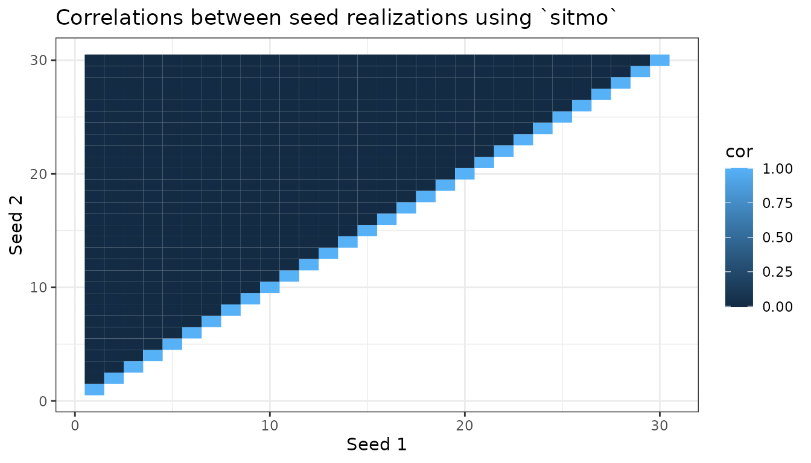

Making a Uniform PRNG with `sitmo`
James Balamuta
2023-11-14
Source:vignettes/uniform_rng_with_sitmo.Rmd
uniform_rng_with_sitmo.RmdIntro
Many of the random number generators for various distributions rely on the Probability Integral Transformation theorem. Succintly stated as:
Theorem
Let \(X\) be a random variable that has a cumulative distribution function (CDF) of \(F_X\left({x}\right)\). Then, define random variable \(U = F_X\left({X}\right)\). Thus, \(U\) is a uniform distribution.
Proof
Given any random variable X, define \(U = F_X\left({X}\right)\). Then:
\[\begin{align*} F_U\left({u}\right) &= P\left( {U \le u} \right) \\ &= P\left( {{F_X}\left( X \right) \le u} \right) \\ &= P\left( {X \le F_X^{ - 1}\left( u \right)} \right) \\ &= {F_X}\left( {F_X^{ - 1}\left( u \right)} \right) \\ &= u \\ \end{align*}\]
Therefore, \(F_U\left({u}\right)\) is the CDF of a Uniform(0,1) RV. Hence, \(U\) has a uniform distribution on \([0,1]\).
Random Uniform Distribution (runif) in C++
Within the R/C++ API, there are three ways one can use a random uniform distribution.
- Through the use of
Rcpp’s hook into theRmath.hlibrary that controls random generation viaR::runif(a,b)or Rcpp’s sugarRcpp::runif(n,a,b). - By using C++11’s built-in generators and statistical distributions to create a uniform real random variable generator.
#include <Rcpp.h>
#include <random>
// [[Rcpp::plugins(cpp11)]]
// [[Rcpp::export]]
void test(unsigned int n, double a, double b) {
// Random Seed
std::random_device rd;
// Random engine
std::mt19937 mt(rd());
// Uniform Distribution
std::uniform_real_distribution<double> dist(a, b);
// Generate n realizations
for (unsigned int i=0; i<n; ++i)
Rcpp:Rcout << dist(mt) << std::endl;
}- Creating your own RNG!
With this being said, we opt to focus the remainder of this vignette on the creation of an RNG.
Creating a Random Uniform Distribution
The basics of creating a random uniform distribution are as follows:
- The generation of random numbers \(R\) (e.g. 18885, 23945734, 4298034852, and so on)
- The known maximum/ceiling of the random number generation \(\max\left(R\right)\)
(e.g.
sitmo::prng::max()orSITMO_RAND_MAX) - The ability to scale the randomly generated number between \([a,b]\).
sitmo provides a high quality version of 1. as shown
informally in the next section and a means of acquiring 2. Thus, one is
only left with creating the correct scaling equation. In particular,
this equation is governed by:
\[a + \frac{R}{{MAX\left( R \right)}}\left( {b - a} \right)\]
The implementation of this using sitmo is given as follows:
#include <Rcpp.h>
#include <sitmo.h>
// [[Rcpp::depends(sitmo)]]
//' Random Uniform Number Generator with sitmo
//'
//' The function provides an implementation of sampling from a random uniform distribution
//'
//' @param n An \code{unsigned integer} denoting the number of realizations to generate.
//' @param min A \code{double} indicating the minimum \eqn{a} value
//' in the uniform's interval \eqn{\left[a,b\right]}
//' @param max A \code{double} indicating the maximum \eqn{b} value
//' in the uniform's interval \eqn{\left[a,b\right]}
//' @param seed A special \code{unsigned integer} containing a single seed.
//' @return A \code{vec} containing the realizations.
//' @export
//' @examples
//' a = runif_sitmo(10)
// [[Rcpp::export]]
Rcpp::NumericVector runif_sitmo(unsigned int n,
double min = 0.0, double max = 1.0,
uint32_t seed = 1) {
Rcpp::NumericVector o(n);
// Create a prng engine
sitmo::prng eng(seed);
// Obtain the range between max and min
double dis = max - min;
for(unsigned int i = 0; i < n; ++i) {
// Sample from the RNG and divide it by the maximum value possible
// (c.f. SITMO_RAND_MAX, which is 4294967295)
// Apply appropriate scale dis = (MAX-MIN) and add min starting loc
o[i] = min + ((double) eng() / (sitmo::prng::max())) * (dis);
}
return o;
}To verify the quality of sitmo in an informal way, we can test the dependency or correlation between the seeds. To do so, we generate the same number of realizations under different seeds that have a range. With this being said, we consider the following code:
# Load packages
library(ggplot2)
library(sitmo)
# Number of Observations to Generate
n = 1e6
# Number of seeds to try (1 ... S)
nseeds = 30
# Storage for seed number and the correlation of the realizations between generators.
cppdf = data.frame(s1 = numeric(nseeds), s2 = numeric(nseeds),
cor = numeric(nseeds), stringsAsFactors = F)
# Generate observations under the seeds
count = 0
for(i in seq_len(nseeds)){
for(j in i:nseeds){
u1 = runif_sitmo(n, 0.0, 1.0, i)
u2 = runif_sitmo(n, 0.0, 1.0, j)
count = count + 1
cppdf[count,] = c(i, j, cor(u1,u2))
}
}We can visualize the data by using a correlation graph. In this case, the generations off the diagonal should have no correlation (\(r = 0\)) whereas the seeds on the diagonal should have a correlation of 1 (\(r = 1\)).
# Create Correlation Plot
ggplot(cppdf) + geom_tile(aes(x = s1, y = s2, fill = cor)) +
xlab("Seed 1") + ylab("Seed 2") +
ggtitle("Correlations between seed realizations using `sitmo`") + theme_bw()
Observing the correlation graph, we note that the pattern predicted - only correlation on the diagonal - exists. Thus, the generation under these seeds are ideal.